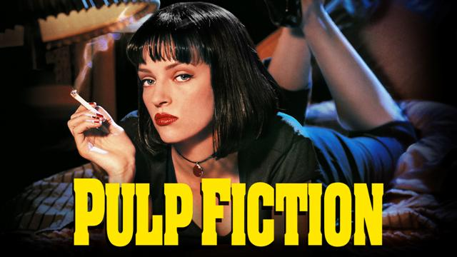

D e s c r i f i l m
Films

Vous faites clairement un blocage sur ce film si vous ne l'avez pas encore vu. Ce qui est une première raison pour changer d'avis. Plus vous attendez plus vous serez en décalage avec un certain graphisme qui vous fera surtout penser que ce film est vieux. Quant à la technique de réalisation vous ne pourrez pas lui donner cette étiquette car la chronologie même de l'histoire est fragmentée. Les personnages sont cultes, ils vous manqueront, même avant la fin du film... L'un des aspects les plus importants est qu'il vous insérera dans une nostalgie, même si vous n'avez jamais vécu l'époque en question vous aurez envie de la retrouver. La musique y joue un rôle clé.
Vous avez forcément déjà entendu ou lu ce titre quelque part. Ca ressemble d'abord à un film sans trop de profondeur, simplement bien réalisé avec un thème violent comme tant de films... Mais vous voyez vite autre chose de bien plus grave, il y a quelque chose qui cloche, puis vous comprendrez tout. La camera filme subjectivement aux personnages donc vous devenez le personnage. Une quête de soi qui fait objet de débat encore aujourd'hui quant à l'issue du film.
Une autre quête de soi, celle d'un homme lambda qui entre dans ce qu'on pourrait appeller la crise de la quarantaine. Accompagnée par d'autres personnages qui entrent donc en collisions et forment une belle trajédie qui vous laissera pensif un bon moment. Vous pourrez vous retrouver dans tel ou tel personnages, tous ont quelque chose à vous dire.
C'est un film qui apporte de la sérénité.

Un batman oui ça peut sembler lourd et enfantin, mais non, pas avec Christopher Nolan. Celui-ci est le deuxième de sa trilogie. Ce qui va donner au film toute sa profondeur est sans aucun doute le personage du Joker, joué à la perfection et plus encore par Heath Ledger. Un anarchiste violent et dégoutant qui pourtant va vous fasciner par son charisme et son discours. Ce genre de méchant qu'on aime, qui nous manque comme par perversion. On a rarement vu un rôle aussi bien joué au cinéma.
copyright 2016-2017